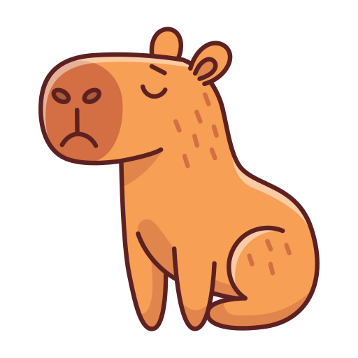

Capybara Tutoring Academy
"Capybara Companions: Where Learning Blossoms!"
Welcome to Academic Capybara's unique tutoring experience!
Our innovative approach combines effective learning with the soothing presence of nature's most laid-back creatures.
At our tutoring sessions, capybaras serve as adorable mascots, creating a calm and friendly atmosphere that puts students at ease.
We've designed our curriculum to seamlessly integrate capybara-themed materials and interactive lessons, making learning both fun and memorable.
Students can engage in activities like reading to our gentle capybara friends or exploring fascinating facts about their habitats and behaviors.
This distinctive blend of education and animal interaction not only enhances retention but also fosters a love for learning and nature.
Our capybara-inspired approach turns each tutoring session into an adventure, where students absorb knowledge while forming a special bond with these charming creatures.